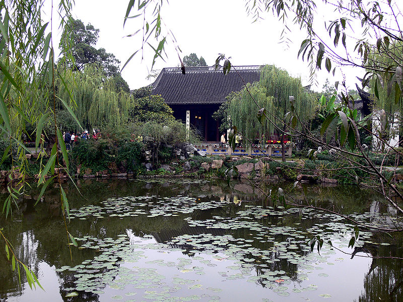

Linggusi pagoda

Mochou Lake Park

Nanjing city wall

"Elephant Road" of the
Ming tomb
{kind=link}
{kind=link}
ITP 2015 will be in Nanjing: Our bid has been accepted! |
Nanjing is situated in the heart of China — close to Shanghai and roughly equidistant between Beijing and Hong Kong. It is a former capital during the Ming Dynasty with a rich cultural heritage. We propose to hold the 5th ITP Conference in Nanjing. The organising committee would be chaired by Xingyuan Zhang and Christian Urban.
Travel to Nanjing
Nanjing is a major city in China. There are international airline connections directly to Nanjing Lukou Airport and via transfer at airports in Hong Kong, Beijing, Shanghai and many others. There are also very convenient train connections from Shanghai and Beijing, which take slightly more than 1h from Shanghai and about 4h from Beijing. Travel within Nanjing can be done cheaply via taxi and public transport.
Venue and Accommodation
The plan is to host the conference at the Hanyuan Hotel, which is inexpensive (ca. 350元/£35/$60/€40 per night including breakfast) and in easy reach from the city centre (see here at Google Maps). It has the usual amenities for hosting conferences (Wifi, conference rooms, etc) and has links to neighbouring universities. There is also the possibility to use lecture rooms for free in Xingyuan's university at the other side of the road. Hanyuan Hotel includes a restaurant and there are innumerable restaurants around the hotel and in downtown Nanjing, all usually very affordable.Advantages of Hosting ITP in Nanjing
There are several groups in the ITP area that are active in China. For example for the last five years there have been popular summerschools in China about Coq with 50 or so student participants each. ITP (and TPHOLs) have never been hosted in China, and this might be an opportunity for the ITP community to foster relations with researchers from China and Asia, and for local researchers to become part of the ITP community.Being in China, Nanjing offers the usual conveniences of good and affordable food. It has several excellent museums and tourist attractions. In the nearby vicinity are touristic hotspots like Yangzhou, Hangzhou, Wuxi and Suzhou. Travelling visas to China should be easy to obtain for participants.
Timing and programme
We propose to hold the conference in late summer, for example in the last week of August (which is the usual time for ITP/TPHOLs) or first week of September. However we can be flexible and accommodate any other time in July and August. Our preference for late summer is because temperatures in Nanjing will then be more moderate than in the high season.As is the tradition, the conference would consist of 4 days of research presentations and invited talks. Like in previous conferences, we would allow ample time between the formal sessions for attendees to mingle and converse. We expect workshops to take place during one or two days before or after the main conference. Half a day will be dedicated to an excursion...
Excursion
We have two possible destinations for an excursion in mind: one is to Yangzhou (1h away from Nanjing by bus), and the other is a (more leisurely) tour of Nanjing and its attractions. The tour to Yangzhou would involve a walk around the Slender West Lake with its pavilions, the white Lotus Flower Pagoda and the Suzhou-style gardens. One the way we would visit the Daming Temple and the old Stone Pagoda of Yangzhou. The day would finish with a dinner in the well-known Fuchun restaurant. The best tour around Nanjing is to go to the Purple Mountains passing by the Linggusi pagoda, the city wall and the Ming tombs (see pictures on the left). There is a wide selection of excellent restaurants around Nanjing's Confucius Temple for a conference dinner. If our bid is chosen, we would canvas for opinions about what participants would be most interested in.

|

|
 |